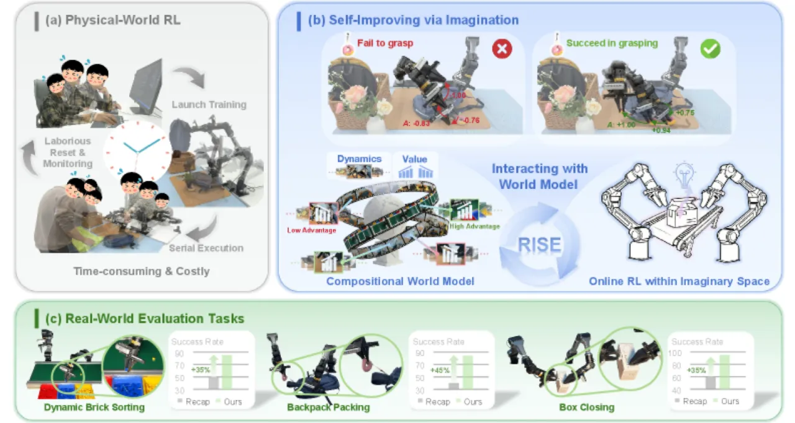
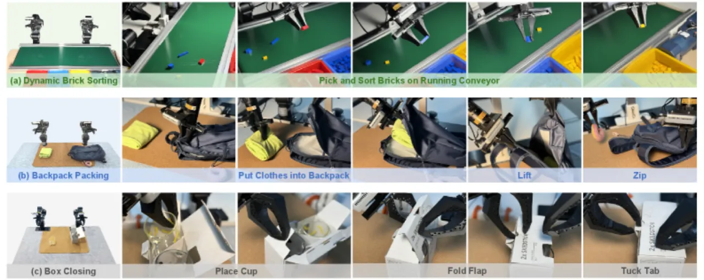
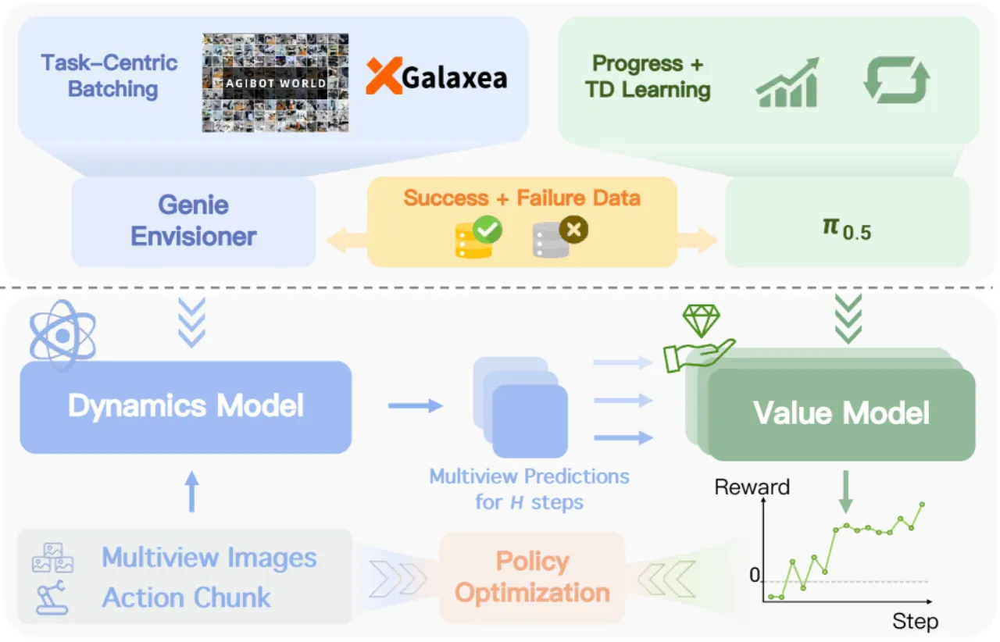
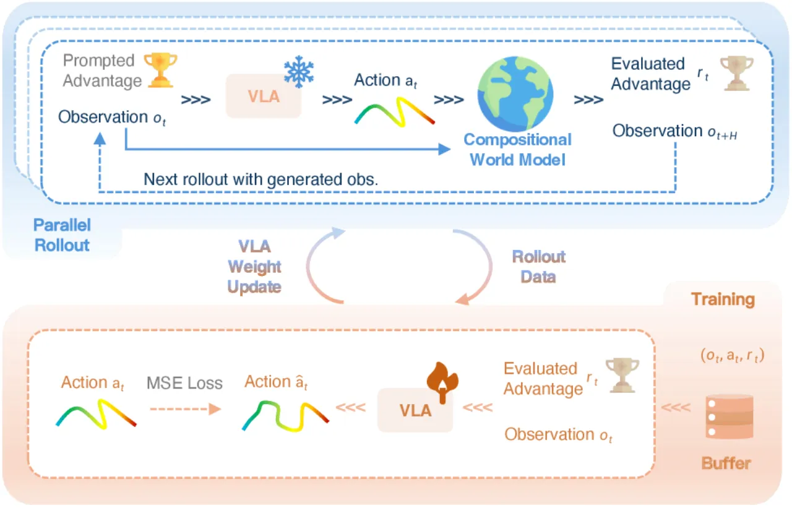
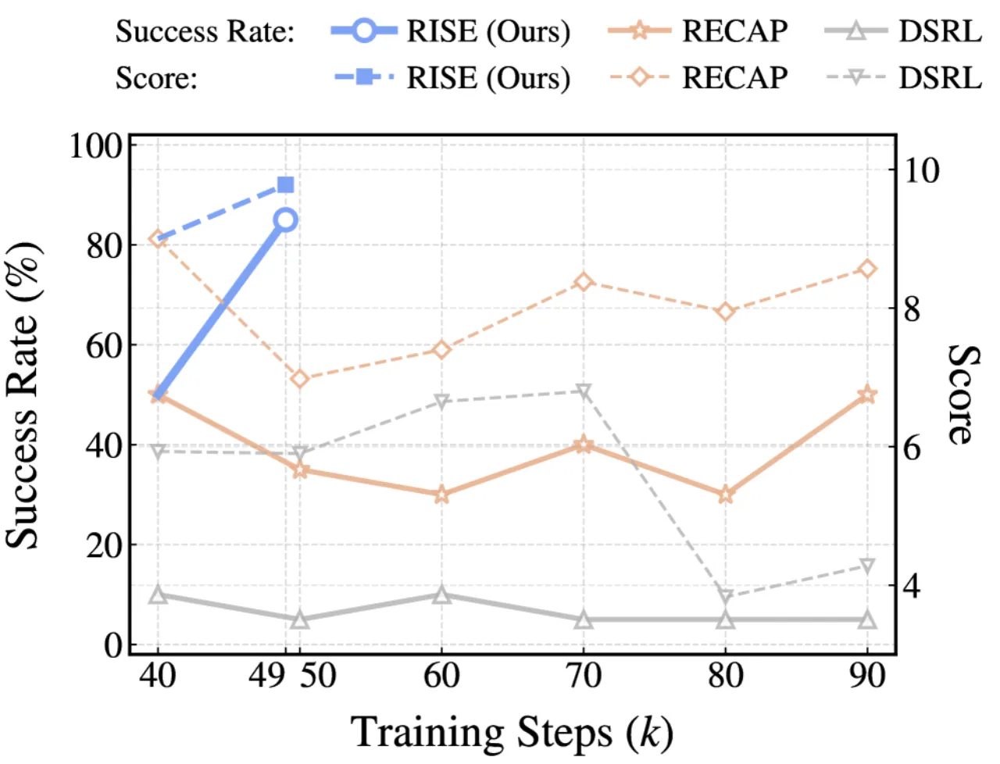

RISE 将世界模型重新定义为强化学习的训练环境：Compositional World Model 由两部分组成——动态模型（dynamics model）负责预测多视角未来观测，价值模型（value model）负责评估想象出的未来状态，两者组合输出 advantage 信号，驱动 policy 的持续自我提升，全程无需额外物理交互。
Vision-Language-Action（VLA）模型在接触密集型操作任务中表现脆弱，而在物理世界中直接跑 on-policy RL 受制于硬件成本、安全风险和环境重置的高昂代价。如何在无需大量真实物理交互的情况下，持续提升机器人 policy 的鲁棒性？
"While reinforcement learning (RL) offers a principled path to robustness, on-policy RL in the physical world is constrained by safety risk, hardware cost, and environment reset."


RISE 的核心是 Compositional World Model，由两个专用模块组成： Dynamics Model（基于 Genie Envisioner）预测候选动作的多视角未来观测； Value Model（从 π₀.₅ VLA 初始化）评估想象状态并输出 advantage。 两者联合驱动一个两阶段自我提升循环，全程无需物理 RL 环境。

以 Genie Envisioner 为基础，接收多视角 RGB 历史帧（history window N=4） 与候选 action chunk（horizon H=50），预测未来多视角观测序列。 关键创新：Task-Centric Batching——训练时「在同一场景下优先追求动作多样性，而非场景多样性」， 显著提升动作可控性（EPE 从 1.05 降至 0.54）。 选用 Genie Envisioner 而非 Cosmos 的原因：合成 25 帧多视角观测仅需 <2 秒， 较 Cosmos 提速约 300×。
从预训练 π₀.₅ VLA 骨干初始化，采用双重训练目标：
① Progress regression：将时间步映射到粗粒度任务进度（0→1），提供密集监督；
② Temporal-Difference (TD) learning：区分成功与失败状态，
使用演示数据与失败 rollout 数据联合训练，使评估对关键失败时刻敏感。
Advantage（公式 2）定义为「每条想象轨迹中各未来观测价值与初始观测价值之差的平均累计改善」，
离散化为 10 个均匀 bins。

在三项真实世界双臂操作任务上评测，报告成功率（%）与得分（满分 10）， 与多个基线对比：π₀.₅ 直接部署、π₀.₅+PPO、π₀.₅+DSRL、π₀.₅+DAgger 及 RECAP。
| 方法 | Dynamic Brick Sorting（成功率） | Backpack Packing（成功率） | Box Closing（成功率） |
|---|---|---|---|
| π₀.₅ (baseline) | 35% | 35% | 50% |
| π₀.₅ + PPO | 10% | 10% | 35% |
| π₀.₅ + DSRL | 10% | 10% | 10% |
| π₀.₅ + DAgger | 15% | 30% | 50% |
| RECAP (prior best) | 50% | 40% | 60% |
| RISE（本文） | 85%（+35%） | 85%（+45%） | 95%（+35%） |
得分（满分 10）：Sorting 9.78 / Packing 9.50 / Closing 9.88（均为 RISE 最优）。 π₀.₅+PPO 表现出严重不稳定性，甚至低于直接部署基线。

动态模型在罕见或欠代表性场景下「仍可能产生物理上不合理的转换（physically implausible transitions）」， 导致 policy 在真实部署时面临分布偏移风险。提高动态模型的真实性和覆盖度是未来的重要方向。
「A non-trivial amount of real-world data remains essential to anchor the learning procedure」。 纯合成数据无法完全替代真实演示，收集成本依然存在， 大规模泛化部署仍需解决真实数据的可扩展性问题。
「RISE shifts the primary bottleneck from physical interaction to computation」。 动态模型预训练耗资 16×H100 约 7 天，微调 8×H100 约 3 天， 前期计算投入门槛较高，对资源有限的研究团队构成挑战。